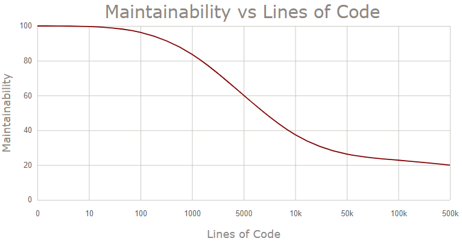
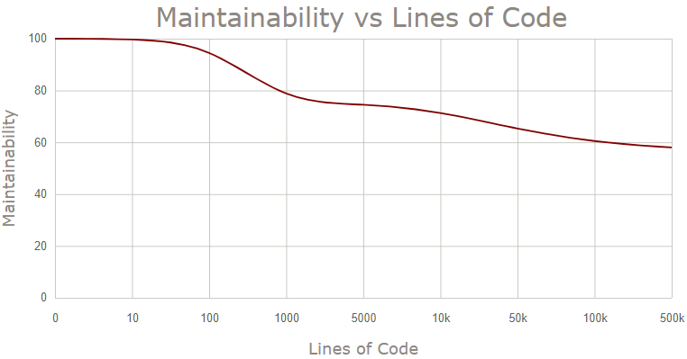

Dependency Injection from scratch
//few words introIntroduction: God-object development
An object is one of the fundamental concepts of object-oriented programming. Object encapsulates a set of some data (properties), as well as the behavior (methods) of the application we are developing. In theory any application can be implemented within a single method of single object of single class. In case of a console application, all logic can be placed in the Main method. In case of ASP.NET Core website, all incoming requests can be processed by Index action of HomeController class. Therefore, if you decided to use God Object Pattern, you do not need to worry about dependency injection at all.
However, putting all application logic in a single object can work only for very simple cases. As the number of features growths, the maintainability of your application will tend to zero.
This graph represents the following idea: when your application has 10 lines of code, it takes you almost no time to find some bug or to integrate a new feature into existing code. However, when application has 10000 lines of code, coding new feature will take 5% of your time. The remaining 95% of the time will be spent on integrating new feature into existing mess (these numbers are not super accurate).
You can contradict me that even OOP beginner will not develop a software in such an ugly way. You will be absolutely right.
Single Responsibility Principle
We definitely need much more than one class to develop a complex application. Each individual class will encapsulate data and behavior needed to perform one particular task (Single Responsibility Principle). Objects of such "narrow" classes will work with each other, making our application live. How exactly some object can use another one? Pretty simple: one object must create an object of another class and, for example, call its method. Let's take a quick look at a simple code example:
public class UserReportGenerator { private readonly Logger _logger = new Logger(); public Report Generate() { _logger.Log("Started"); //Repor generation logic _logger.Log("Completed"); ... } } public class Logger { public void Log(string message) { string logMessage = $"Message: { message }, Time: { DateTime.Now }"; File.WriteAllText(@"C:\app_log.txt", logMessage); } }
Here we have two separate classes. Each class is responsible for the only (almost) task.
UserReportGenerator does not follow Single Responsibility Principle 100% percent. In addition to direct responsibility (generating user report), UserReportGenerator is also responsible for creating its dependencies. This "instantiating" responsibility also has to be moved out of UserReportGenerator class. We will see how to deal with it later and why it's super important.
Class Logger is a low-level component in this small chain. It knows how to create log messages in appropriate format before saving them into text file. The high-level component is UserReportGenerator class which knows how to generate user reports according to some business rules. This separation simplifies code-readability and allows us to reuse some(!) classes again and again for the new features in different parts of the system.
Our new approach will definitely allow us to develop complex application that even can be sold to the end users. However, I am afraid that after a while we may experience serious maintainability problem again. Do you remember the graph Maintainability & Lines of Code? Here is how updated version with many small classes looks like:
This looks much better, but for some reason the line still goes down despite the better code design. The reason of that is ...
Tight Coupling Problem
As you may already noticed UserReportGenerator class is tightly coupled to Logger class, because it is using the "new" keyword followed by class name to create the instance of Logger. This is a glue. The relationship between two classes is defined at compile time, so no flexibility at runtime. UserReportGenerator always has to work only with one concrete Logger implementation. You may be wondered why do we might need to break this relationship? Why this is a problem? There are few reasons to do it:- Improve code reusability. It may not be possible to reuse some class in a new context if it is tightly coupled to another class. Look at Logger class first. Any other classes in our system can quickly reuse logging feature as many times as needed. They have just create an instance of Logger and call its method. But now imagine that someone else wants to reuse UserRerportGenerator. He will also reuse Logger object however he may not need the logging feature at all!
- Improve code flexibility. Code cannot be quickly adapted to new requirements which are changing regularly. Today it's enough to write logs in a simple text file. Tomorrow we will have to write logs in a database. The day after tomorrow? Message Broker? Yeap, you can modify Logger class and re-deploy your application. But what if there are thousands of classes that already use your Logger. You may spend quite a long time just to compile your solution trying to update consumers of Logger class. And don't forget about the risk of regression defects.
- Unit testing. Tightly coupled classes may not be unit testable. Logic of Generate method cannot be tested in isolation from the external environment, because each run of such tests will touch the file system. Tests will fail when file system errors occur even if report generation logic is perfect.
Now we can say with confidence that UserReportGenerator does not have to instantiate its dependencies. Instead UserReportGenerator can accept dependecies it needs from the outside via constructor. This is a well-known Constructor Injection technique.
public class UserReportGenerator { private readonly Logger _logger; public UserReportGenerator(Logger logger) => _logger = logger; }
This constructor says all of its potential consumers the following: "If you want to instantiate me for your purposes, please provide the instance of Logger.". So the purpose of the constructor is not only about simple initializing of instance members. Constructor is the class contract that must be followed by all its consumers.
But even now none of drawbacks listed above are eliminated. Tight coupling is still in place, despite the fact that UserReportGenerator is not instantiating dependency anymore. UserReportGenerator is still dependent on concrete implementation of Logger.
There are two key principles in Object-Oriented Desing which can really help us. I am talking about Dependency Inversion и Inversion of Control principles.
Dependency Inversion & Inversion of Control
Here is a classic definition of Dependency Inversion Principle:
"High-level modules should not depend on low-level modules. Both should depend on abstractions (e.g. interfaces).
Abstractions should not depend on details (concrete implementations). Details should depend on abstractions."
Let's apply Dependency Inversion Principle to our classes. This is what we get:
public class UserReportGenerator { private readonly ILogger _logger; public UserReportGenerator(ILogger logger) => _logger = logger; } public interface ILogger { void Log(string message); } public class Logger : ILogger { //Implementation }
We've introduced ILogger abstraction, and UserReportGenerator knows only about that abstraction. No dependency on a concrete implementation anymore. But please notice that DI Principle only suggests a solution to the problem but does not suggest the technique to implement it. In other words, who and how should instantiate Logger instance and inject it into constructor of UserReportGenerator object? Dependency Inversion Principle does not answer that questions but Inversion of Control Principle does.
Inversion of Control Principle
IoC is not about DI only. DI is a subset of IoC. Here is the IoC definition:"Any sort of programming style where an overall framework or runtime controlled the program flow."
For DI, IoC means that objects do not have to decide which dependencies they need. This decision making must be delegated to a separate component.Typically Inversion of Control principle is achieved by using special frameworks calls IoC containers (Autofac, SimpleInjector, Light Inject...). They are responsible for instantiating dependencies and injecting them into appropriate objects.
var builder = new ContainerBuilder(); builder.RegisterType<Logger>().As<ILogger>();
So now everything is in right place. Our classes are responsible only for doing their job. They do not create dependencies they need anymore.
Dependency Inversion Principle in conjunction with Inversion of Control makes your system flexible. Our classes can be reused any number of times and there is no need to reuse their hardcoded dependencies anymore. When there is a new requirement to write logs into the database, we simply need to provide the UserReportGenerator class with the new implementation of ILogger interface. To do that, one simple change has to be made in a Composition Root of our application:
public class DatabaseLogger : ILogger { public void Log(string message) { //Write log into database } }
var builder = new ContainerBuilder();builder.RegisterType<Logger>().As<ILogger>();builder.RegisterType<DatabaseLogger>().As<ILogger>();
If we need to unit test UserReportGenerator in isolation from the external environment, it will be enough to use Null Object pattern or to generate a stub.
Null Object Pattern in unit test:
[Fact] public void Report_Generated_Successfully() { var userReportGenerator = new UserReportGenerator(new NullLogger()); Report report = userReportGenerator.Generate(); Assert.True(report.Success); }
Generating a stub in unit test using Moq:
[Fact] public void Report_Generated_Successfully() { var loggerStub = new Mock<ILogger>(); var urg = new UserReportGenerator(loggerStub.Object); Report report = urg.Generate(); Assert.True(report.Success); }
Dependency Inversion and Inversion of Control principles can ultimately help us to keep the maintainability of our system in a good shape quite a long time, potentially forever.
However, when you start injecting everything in everything you can get a very long list of constructor parameters. This is not as critical problem as tight coupling but still this is a smell that deserves an investigation.
Too many dependencies
This is what you may encounter with when using constructor injection pattern:
public class OrderProcessingService : IOrderProcessingService { public OrderProcessingService( IPaymentService paymentService, IPriceFormatter priceFormatter, IDiscountService discountService, ILocalizationService localizationService, IShoppingCartService shoppingCartService, IPermissionService permissionService, IRepository<Order> orderRepository, IPdfGenerationService pdfGenerationService, IDateTimeProvider dateTimeProvider) { //initialization } //implementation }
There are two potential problems with such design:
- If some class has many dependencies probably it does a lot of things. Big number of dependencies may signal about violation of single responsibility principle. And violation of Single Responsibility Principle, in turn, complicates code reusability, debugging, making changes, etc.
- Unit testing can be complicated for such classes because you will have to spend a lot of time arranging your mock objects for all dependencies.
But remember: big number of dependencies is not necessary something that must be refactored once you found it in your source code. This is not a critical problem itself. It can just signal about potential problems in your code design. Do these problems really exist? If yes, are these problems worth fighting against them? If yes, are these problems worth fighting against them right now or you can live with that and do more important job right now? Investigate your particular case and answer this chain of questions before starting applying possible refactoring techniques.
Solution #1: Refactoring towards Single Responsibility
As mentioned above, constructor over-injection may tell you about violation of single responsibility principle. Mixing responsibilities within one class may complicate its maintainability and maintainability of all its consumers.
The more responsibilities some class has the more 1) reasons to change it has 2) consumer classes reference it.
From these rules we can conclude that all our consumers are at risk. Regression issues are possible everytime we change SRP violator class. And these changes will be frequent because there are a lot of reasons for it. Obvious decision will be to split SRP Violator class into few smaller classes. Each new class will have less number of dependencies and each consumer will work with "narrow" classes.
END
Solution #2: Ambient Context pattern
Constructor, Method or Property Injection is not the only way for objects to use each other. Another alternative of injection is a globally accessed static properties in general and Ambient Context pattern in particular. The pattern is not a replacement of Constructor Injection. Ambient Context can work good only for cross-cutting dependencies of your application.
cross-cutting concern definition
Let's get back to OrderProcessingService class and take a quick look at two its dependencies IDateTimeProvider and ILogger. Both of them are cross-cutting dependencies for our application because all different layers (Domain, Data Access, Services, Web etc) might need them. Classes at every layer might need to log something or to get current date and time information.
Classic constructor injection approach for cross-cutting objects will litter hundreds of constructors with additional parameters. You don’t inject in constructor dependencies like StringBuilder, Task, Guid or ThreadPoolQueue. So there is no a big need to inject IDateTimeProvider or ILogger into constructor as well because they are just technical details.
Let's implement Ambient Context pattern for ILogger interface only (implementation for IDateTimeProvider will look the same):
public class LoggerProvider { public static ILogger Instance { get; private set; } = new NullLogger(); public static void Initialize(ILogger logger) { Instance = logger; } } public class Logger : ILogger { public void Log(string message) { //TODO: Write to a text file } } public class NullLogger : ILogger { public void Log(string message) { } }
Also don't forget to initialize it in composition root of your application (Main, Startup, OnStartup etc):
LoggerProvider.Initialize(new Logger());
Usage:
public class OrderProcessingService : IOrderProcessingService { public OrderProcessingService( ...IDateTimeProvider dateTimeProvider,ILogger logger) { //initialization } public void Process() { LoggerProvider.Instance.Log("Process started"); //Some Logic } }
Here are key aspects implementation and usage:
- Class LoggerProvider has static property Instance of ILogger type. This is what different parts of our application will access to get the instance they need.
- Method Initialize should be called somewhere in a Composition Root of your application to initialize Instance property with a concrete implementation.
- By default property Instance is initialized with NullLogger object. This helps to avoid NullReferenceException in case Initialize mistakenly was not called.
Ambient Context can be helpful and convenient to use but from the other hand it has one drawback. Ambient Context pattern blurs the class contract in which the pattern is used. When you use Conctructor Injection, it takes you just few seconds to answer the question: What dependencies does my class have? Just take a look at constructor and question is answered. However, in case of Ambient Context, you will have to go thought all the code of a class to answer the same question.
Also don't forget that Ambient Context is a global variable which is used by many parts of your application. So it should be stateless and used as read-only to avoid unexpected and hard-to-investigate defects. If you feel that you need to have something similar to this:
TimeProvider.Instance.SomeProperty = "Some Data";
most likely you should throw it away and come up with a better design decision.
Solution #3: Facade design pattern
Analyzing a long list of constructor parameters of one or multiple classes, you can spot so called Leaky Abstraction problem.